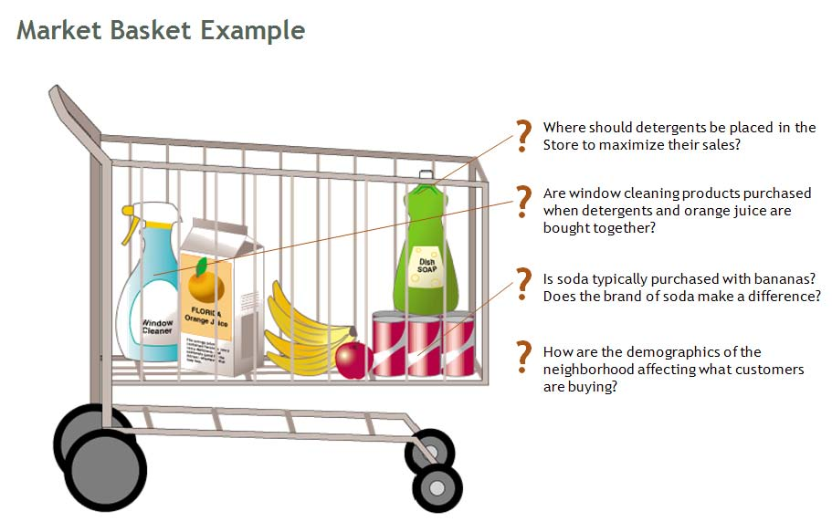
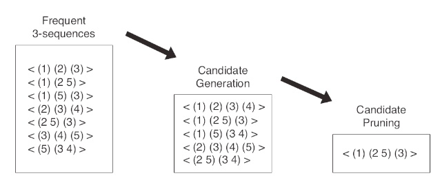

Data Mining Portfolio
Association Analysis
Association Analysis is a concept in which items are considered a associations if they help to predict some type of behavior. Association Analysis is often applied to market based data consisting of a transaction number and the list of items bought. Depending on the needs of the data, makret based data can simply be a list of users and their purchases or a set of stores and the items bought in each store. What ever may be the type of the transcation, the same goal is kept amongf them that is the desire to generate rules that will help to predict the occurrence of an item based on the occurrences of other items in the transaction. This type of rule generation could help industies target specific sales to drive up profits, as well as shopping patterns and possible locations o fitems in the store as in the typical beer and diapers example. Once the transaction data has been collected, the avaliable itemsets can be used to help determine frequent itemsets that are predetermined by a threshold known as support. These generated frequent itemsets will play a key role when it comes to the actual association analysis.

Once the frequent itemsets have been generated, association rules can be drafted in the form of X->Y. However generating the rules should be regulated as it would not be beneficial to have all the possible rules since this would overfit the data. In order to maintain a ordered form od developing rules, these association rules must be monitored by support and confidence (how often Y appears in X) to have an accurate rule set. One could also generate all possible itemsets and prune with the calculation of support and confidence for each itemset, however, this method would be extremely computationally intensive.

The best approach to this method is the Apriori Principle, where if an item set is frequent then all its subset are frequent. To implement this we would first generate itemsets of length 1 and generate k+1 candidate itemsets from k frequent item sets. After this, one can prune the itemsets of K + 1 that are infrequent of K and then count the support of these candidates to eliminate the infrequent candidates. This process is repeated until no possible itemsets can be generated. Aprioris can become vulnerable as thresholds for support must be set to a optimal value that does not overpopulate the rule list. Also, if the transaction number increases or if the dimensionality increases the amount of memory being used in this method can slow down the process.